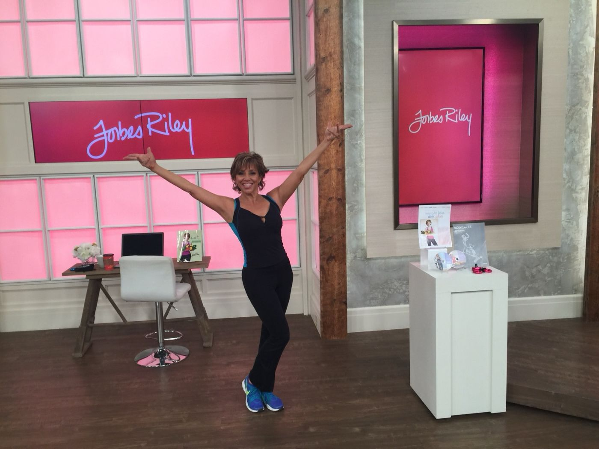
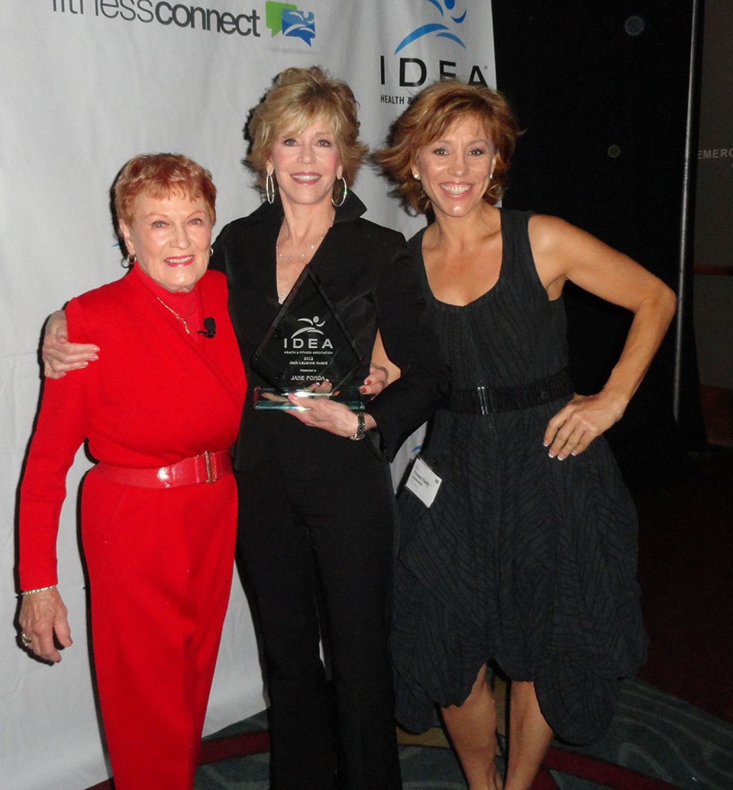
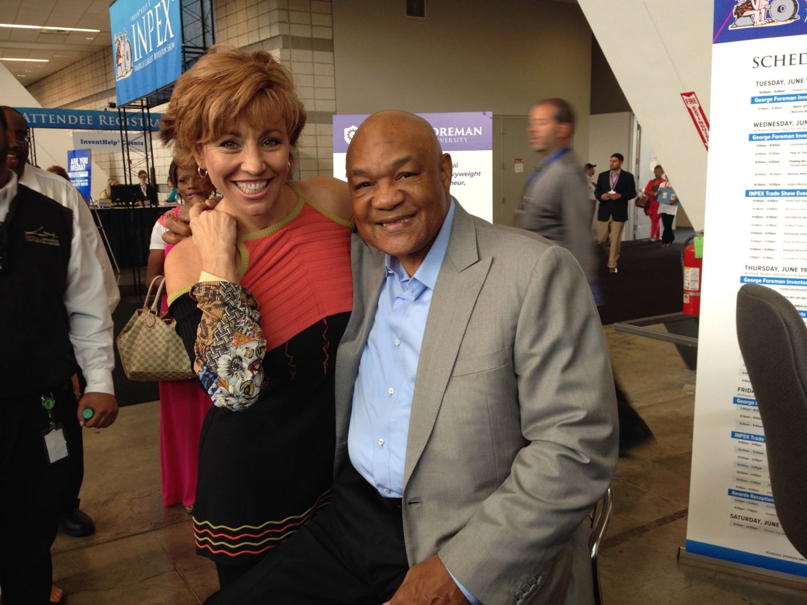
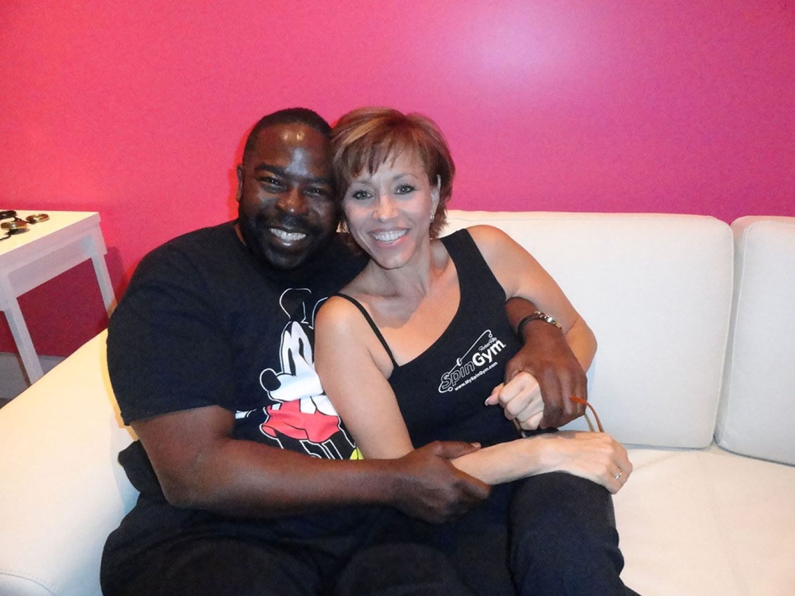
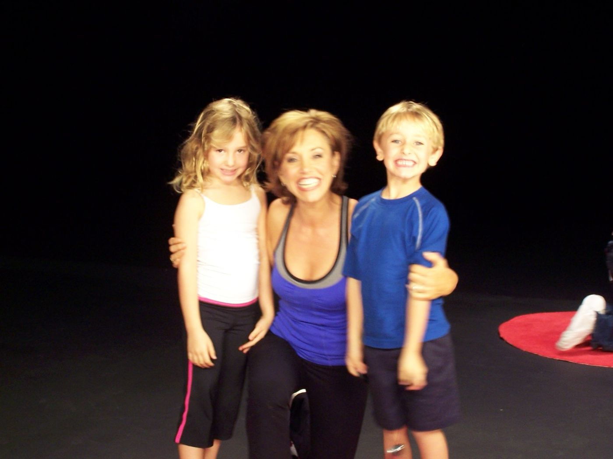

About Forbes
You are the sum of the obstacles you overcome.
Forbes Riley is an award-winning TV host, the most successful female infomercial presenter of all time, creator of SpinGym, keynote speaker, author and coach. She got here by refusing to stay where she started.

From Broadway to the $2.5 billion host
Forbes began as an actress and dancer in Broadway musicals, including playing opposite the late Christopher Reeve, and worked with Bob Fosse. Television followed: ESPN’s original X-Games, the daily national talk show Essentials on TLC, ABC Family, FIT-TV, and acting roles on Fox’s 24, The Practice, Picket Fences and the series lead in Fashion House.
Her day job, though, was selling health and fitness on home shopping. She co-hosted two of the most successful infomercials of all time, the Jack LaLanne Power Juicer (eight years in 80 countries) and Montel Williams’ HealthMaster. She launched Fit-TV with Jake “Body by Jake” Steinfeld, a network later sold to FOX for $500 million. The press crowned her the $2 Billion Dollar Host. The number has kept climbing.
Through all of it she carried an extra 30 pounds and was ridiculed for it. After 9/11 she changed direction: figure out her own body, then help everyone else. That mission became SpinGym, the e.a.t. journal, Forbes Living TV and, eventually, Forbes Factor Live.

Who is Forbes Riley?
Five careers, one person
Introduced the world to juicing
From working with Jack LaLanne to selling fitness on Fit-TV, to creating SpinGym. Inducted into the National Fitness Hall of Fame in 2010 alongside Arnold Schwarzenegger, Joe Weider and Tony Little.
Two national talk shows
The premiere years of ESPN’s X-Games, Essentials on TLC and Forbes Living on WEtv. Dynamic, informative and always entertaining.
In a category all her own
More than 180 national infomercials, multiple ERA Moxie Awards for Best Female Presenter, two Telly Awards, and more than $2.5 billion in sales across 80 countries.
The female Tony Robbins
From women’s groups and Fortune 100 companies to fitness conventions and colleges. Her keynotes range from the perfect sales pitch to health, wellness and reinvention.
“If you don’t build your dreams, someone will hire you to build theirs.”
Grew SpinGym from marketing product out of the back of her car to over a million sold. Owns Forbes Riley Studios, a production studio and sound stage in St. Petersburg, Florida.
Her most cherished role
Mother of boy and girl twins, Ryker and Makenna. She divides her time between Los Angeles and St. Petersburg, and travels constantly for work, skiing and scuba.
Timeline
The road so far
Miss Teenage New YorkHer father spends three years in hospital after an accident, enduring 15 operations. His unrealized dream of becoming an inventor stays with her.
BroadwayMusicals with Christopher Reeve and Bob Fosse. Backpacks solo through Europe at 21.
TelevisionESPN X-Games, TLC’s Essentials, Fit-TV with Body by Jake, and 20+ years on HSN and QVC from the US to Canada, England, Spain and Australia.
The $2 Billion HostJack LaLanne Power Juicer and Montel Williams HealthMaster. Twins Ryker and Makenna are born in 2002.
SpinGymLaunched on Discovery’s PitchMen after being told it would never work. 600,000 sold in three years; 61,000 in a single 24-hour live show.
National Fitness Hall of FameInducted alongside Arnold Schwarzenegger, Joe Weider and Tony Little.
Forbes Riley StudiosOpens her own TV and film production studio in St. Petersburg. Forbes Living airs nationally on WEtv.
Forbes Factor LiveA five-day program to master your pitch, gain confidence and drop limiting beliefs. The Forbes Factor podcast goes live weekly on VoiceAmerica.
The Queen of PitchPitch Secrets Masterclass, Pitch Practice Pods, FRedX and Momentum X. Teaching the skill that built everything above.
Friends & mentors
Good company




“She radiates and communicates in a way I’ve never seen before. A true blessing to behold.”Les Brown
“Forbes brings energy and professionalism to her work. In all my years in television, she is the best I have been around.”Joe Theismann, NFL Hall of Fame
“Funny, smart, gutsy and talented. If you want the job done right, go see Forbes.”Florence Henderson

Giving back
Contribution is a gift she was given early
With an eye toward her community and those in need, Forbes actively creates and supports charitable solutions. She works with Big Brothers Big Sisters, Wounded Warriors, the Veterans Wheelchair Games, Clothes to Kids, Dress for Success, the SPCA, the Mr. Strong Foundation and the Revlon Run/Walk for the Cure.
One of her most memorable Thanksgivings was spent dishing out meals for those less fortunate. “Think about everyone, and always be grateful.”